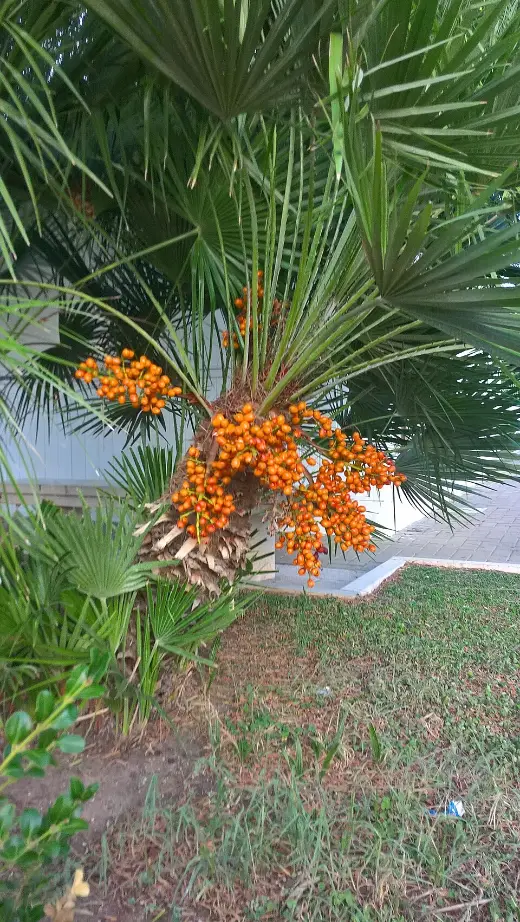

Saw palmetto
Saw palmetto is a wild fruit you can forage from August to October in Southeast. Low fan palm of southeastern flatwoods with saw-toothed stalks; olive-sized berries ripen black in autumn.

When is saw palmetto in season in the United States?
Saw palmetto is usually in season August to October. Timing shifts with weather, latitude and altitude.
Where does saw palmetto grow in the United States?
Saw palmetto grows in Alabama, Arkansas, Florida, Georgia, Kentucky, Louisiana, Mississippi, North Carolina, Oklahoma, South Carolina, Tennessee, Texas, Virginia, West Virginia. Regions: Southeast.
How do you recognise saw palmetto?
Low fan palm of southeastern flatwoods with saw-toothed stalks; olive-sized berries ripen black in autumn.
How do you harvest saw palmetto?
Pick only fully ripe fruit that comes away easily, into a shallow container so it doesn't crush. Leave plenty on the plant for birds and wildlife.
How do you eat saw palmetto?
Strong, soapy-sweet taste; usually dried for tea and tinctures.
How do you store saw palmetto?
Dry.
What is saw palmetto good for?
Fat.